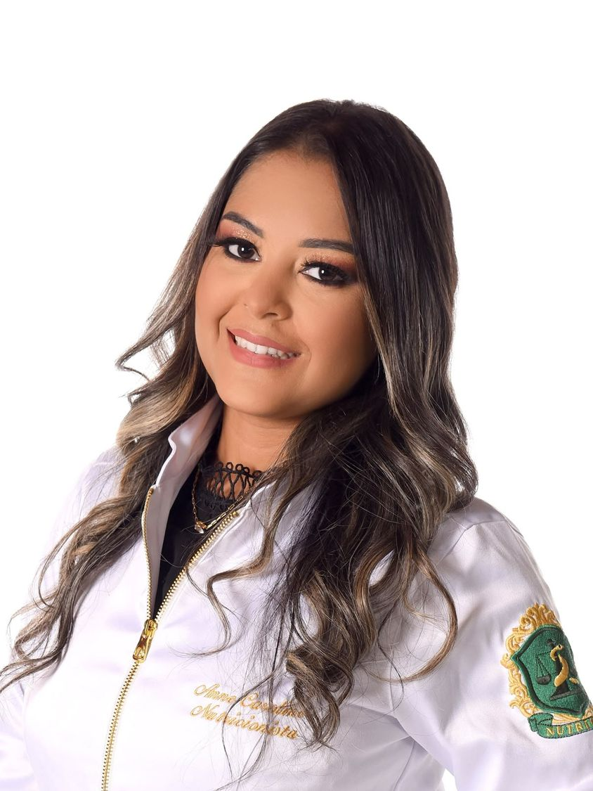
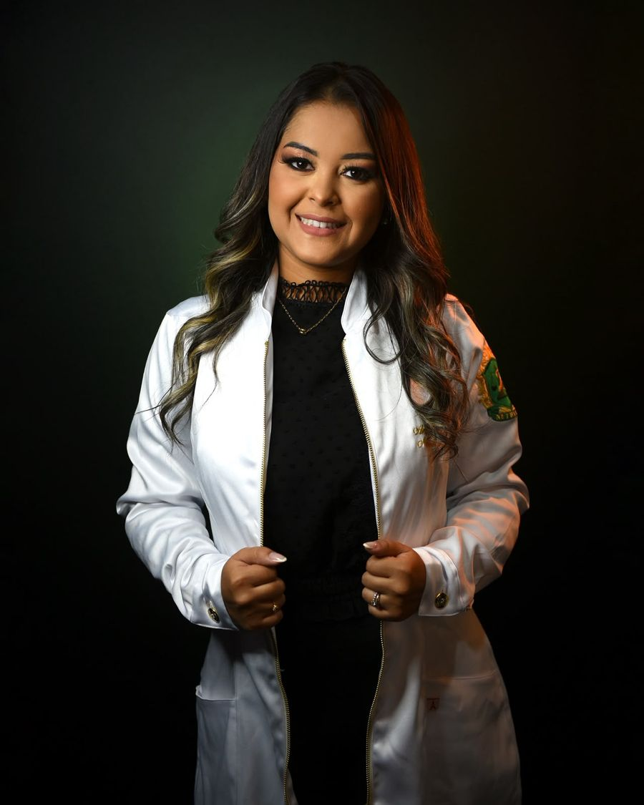
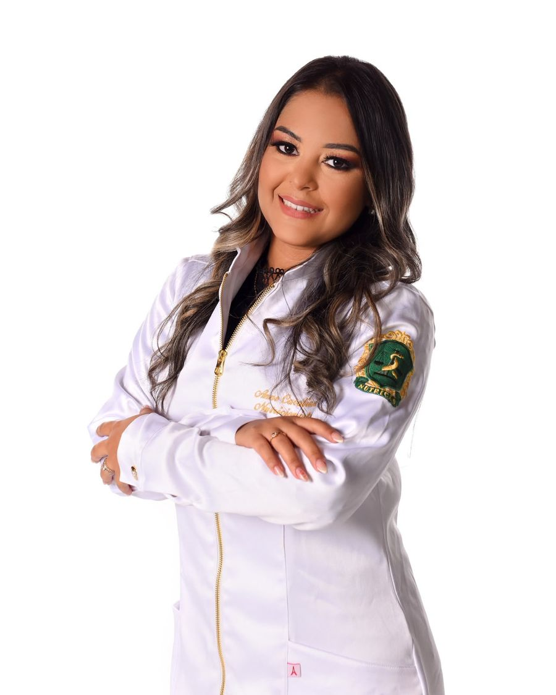

Com mais de 5 anos de experiência em nutrição clínica e esportiva vou ajudar você a restaurar sua autoestima através do método ABC, com um plano alimentar que cabe na sua rotina.

Seu plano parte da comida do seu dia a dia, para ser fácil de seguir.
Ação, Base Sólida e Constância! Um caminho para restaurar a sua autoestima ao longo do processo.
A mesma qualidade e atenção da consulta presencial, sem você precisar sair de casa. Com avaliação completa por vídeo, plano alimentar no celular e suporte direto para tirar dúvidas, você alcança seus resultados com muito mais praticidade.

Muito prazer! Sou nutricionista clínica e esportiva, e hoje vivo o propósito que escolhi lá atrás: ajudar pessoas a transformarem seus hábitos, suas histórias e seus destinos através da nutrição. Meu foco é acompanhar de perto quem busca emagrecimento, hipertrofia ou o resgate da saúde e da qualidade de vida. Acredito em uma nutrição possível, individualizada e sem terrorismo, feita para caber na sua rotina e gerar resultados reais e duradouros.
CRN-6 40322
Quero começarMensagens reais enviadas à Anne.
“Gostei muito da nossa consulta. A princípio fiquei apreensiva por pensar ‘será que por ser online dá certo?’, mas depois notei que uma coisa não implica na outra. Você me passou confiança e me deixou bem à vontade.”
Paciente - 32 anos“Amei o meu plano alimentar, tudo prático e fácil, nada trabalhoso, e saboroso. Parabéns pelo seu trabalho, tudo muito bem planejado.”
Paciente - 43 anos“Meu maior desafio era a janta. Por falta de planejamento, terminava comendo pão ou qualquer besteira. Com planejamento, hoje é escondidinho de batata doce com frango.”
Paciente - 24 anos“Gostei bastante do plano alimentar, são coisas que costumo comer no dia a dia e dessa forma não será tão difícil seguir a dieta.”
Paciente - 36 anosSim. O acompanhamento nutricional online oferece toda a atenção, individualização e estratégia de uma consulta presencial, mas com a praticidade de se encaixar perfeitamente na sua rotina. Sem trânsito ou perda de tempo com deslocamentos, realizamos uma avaliação completa do seu histórico, rotina, exames e objetivos por videochamada. Você recebe seu plano alimentar personalizado diretamente no celular e conta com suporte contínuo para tirar dúvidas e manter a constância — garantindo resultados reais de qualquer lugar do mundo.
Não é essa a proposta. O plano parte da sua rotina e dos alimentos que você já come, para ser fácil de manter.
É só chamar no WhatsApp ou no Instagram, e eu respondo com os horários disponíveis.
Agende sua consulta e comece a cuidar da sua alimentação sem abrir mão do que você gosta.
